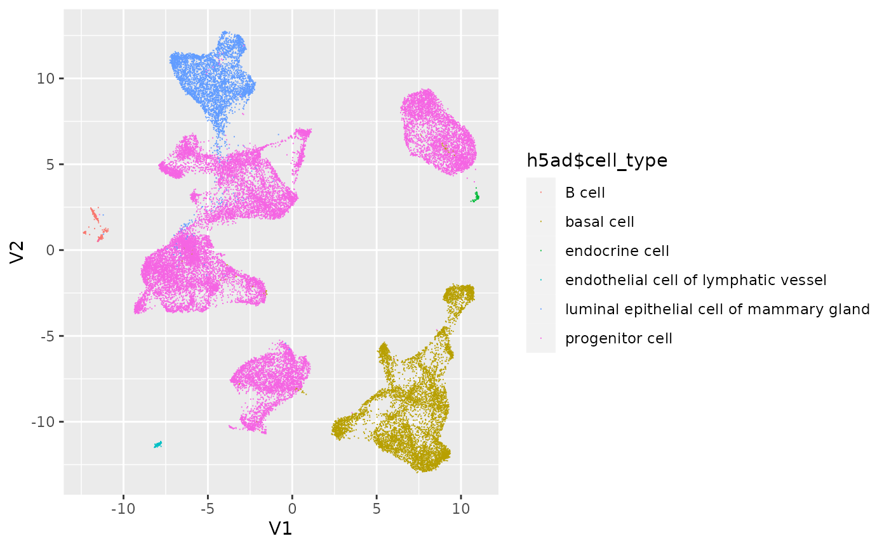

vignettes/B_CXG.Rmd
B_CXG.RmdLast modified: 20 July, 2022
FIXME: Along with the topic of your workshop, include how students can expect to spend their time. For the description may also include information about what type of workshop it is (e.g. instructor-led live demo, lab, lecture + lab, etc.). Instructors are strongly recommended to provide completely worked examples for lab sessions, and a set of stand-alone notes that can be read and understood outside of the workshop.
The focus is on cellxgenedp package. This package emphasize dplyr and ‘tidy’ approaches to working with data.frames. Files downloaded from the HCA or CellXGene web sites can be imported into R / Bioconductor as SingleCellExperiment objects through the LoomExperiment and zellkonverter packages.
| Activity | Time |
|---|---|
| Introduction to the CellXGene data browser | 4m |
| CellXGene data discovery in R / Bioconductor | 7m |
| Integration with R / Bioconductor single-cell analysis | 4m |
List “big picture” student-centered workshop goals and learning objectives. Learning goals and objectives are related, but not the same thing. These goals and objectives will help some people to decide whether to attend the conference for training purposes, so please make these as precise and accurate as possible.
Learning goals are high-level descriptions of what participants will learn and be able to do after the workshop is over. Learning objectives, on the other hand, describe in very specific and measurable terms specific skills or knowledge attained. The Bloom’s Taxonomy may be a useful framework for defining and describing your goals and objectives, although there are others.
Datasets
Interactive visualization
Some observations
Load the packages we’ll use
suppressPackageStartupMessages({
library(cellxgenedp)
library(dplyr)
library(zellkonverter)
library(SingleCellExperiment)
library(ggplot2)
})Connect to the database
db = db()Discover datasets with 10x assays of African American females
african_american_female <-
datasets(db) |>
filter(
facets_filter(assay, "ontology_term_id", "EFO:0009922"),
facets_filter(ethnicity, "label", "African American"),
facets_filter(sex, "label", "female")
)
african_american_female
#> # A tibble: 21 × 27
#> dataset_id colle…¹ assay cell_…² cell_…³ datas…⁴ devel…⁵ disease ethni…⁶
#> <chr> <chr> <list> <int> <list> <chr> <list> <list> <list>
#> 1 de985818-285f… c9706a… <list> 31696 <list> https:… <list> <list> <list>
#> 2 f72958f5-7f42… 2f75d2… <list> 982538 <list> https:… <list> <list> <list>
#> 3 07854d9c-5375… bcb614… <list> 172847 <list> https:… <list> <list> <list>
#> 4 0b75c598-0893… bcb614… <list> 304652 <list> https:… <list> <list> <list>
#> 5 32b9bdce-2481… bcb614… <list> 107344 <list> https:… <list> <list> <list>
#> 6 59b69042-47c2… b9fc3d… <list> 49139 <list> https:… <list> <list> <list>
#> 7 e763ed0d-0e5a… b9fc3d… <list> 7274 <list> https:… <list> <list> <list>
#> 8 db0752b9-f20e… b9fc3d… <list> 55348 <list> https:… <list> <list> <list>
#> 9 d9b4bc69-ed90… b9fc3d… <list> 20000 <list> https:… <list> <list> <list>
#> 10 bc2a7b3d-f04e… b9fc3d… <list> 109995 <list> https:… <list> <list> <list>
#> # … with 11 more rows, 18 more variables: is_primary_data <chr>,
#> # is_valid <lgl>, linked_genesets <lgl>, mean_genes_per_cell <dbl>,
#> # name <chr>, organism <list>, processing_status <list>, published <lgl>,
#> # revision <int>, schema_version <chr>, sex <list>, tissue <list>,
#> # tombstone <lgl>, x_normalization <chr>, created_at <date>,
#> # published_at <date>, revised_at <date>, updated_at <date>, and abbreviated
#> # variable names ¹collection_id, ²cell_count, ³cell_type, …
#> # ℹ Use `print(n = ...)` to see more rows, and `colnames()` to see all variable namesFind H5AD files for these datasets; visualize and download one for illustration
selected_files <-
left_join(
african_american_female |> select(dataset_id),
files(db),
by = "dataset_id"
)
selected_files
#> # A tibble: 63 × 8
#> dataset_id file_id filen…¹ filet…² s3_uri user_…³ created_at updated_at
#> <chr> <chr> <chr> <chr> <chr> <lgl> <date> <date>
#> 1 de985818-285f-4… d5c6de… local.… H5AD s3://… TRUE 2021-09-24 2021-09-24
#> 2 de985818-285f-4… a0bcae… local.… RDS s3://… TRUE 2021-09-24 2021-12-21
#> 3 de985818-285f-4… dff842… explor… CXG s3://… TRUE 2021-09-24 2021-09-24
#> 4 f72958f5-7f42-4… 2e7374… local.… RDS s3://… TRUE 2021-10-07 2021-12-21
#> 5 f72958f5-7f42-4… bbce34… explor… CXG s3://… TRUE 2021-10-07 2021-10-07
#> 6 f72958f5-7f42-4… 091323… local.… H5AD s3://… TRUE 2021-10-07 2021-10-07
#> 7 07854d9c-5375-4… f6f812… local.… H5AD s3://… TRUE 2022-02-15 2022-02-15
#> 8 07854d9c-5375-4… 7ae7df… explor… CXG s3://… TRUE 2022-02-15 2022-02-15
#> 9 07854d9c-5375-4… 3f995f… local.… RDS s3://… TRUE 2022-02-15 2022-02-15
#> 10 0b75c598-0893-4… 38eaca… local.… H5AD s3://… TRUE 2022-02-15 2022-02-15
#> # … with 53 more rows, and abbreviated variable names ¹filename, ²filetype,
#> # ³user_submitted
#> # ℹ Use `print(n = ...)` to see more rowsVisualize ‘CXG’ files in the CellxGene web browser
selected_files |>
filter(filetype == "CXG") |>
dplyr::slice(1) |>
datasets_visualize()Download ‘H5AD’ (anndata) files for local use
h5ad_file <-
selected_files |>
filter(filetype == "H5AD") |>
dplyr::slice(1) |>
files_download(dry.run = FALSE)Read the H5AD file into R
h5ad <- readH5AD(h5ad_file, reader = "R", use_hdf5 = TRUE)
h5ad
#> class: SingleCellExperiment
#> dim: 33234 31696
#> metadata(5): X_normalization default_embedding layer_descriptions
#> schema_version title
#> assays(1): X
#> rownames: NULL
#> rowData names(4): feature_biotype feature_is_filtered feature_name
#> feature_reference
#> colnames(31696): CMGpool_AAACCCAAGGACAACC CMGpool_AAACCCACAATCTCTT ...
#> K109064_TTTGTTGGTTGCATCA K109064_TTTGTTGGTTGGACCC
#> colData names(34): assay assay_ontology_term_id ...
#> tissue_ontology_term_id tyrer_cuzick_lifetime_risk
#> reducedDimNames(2): X_tsne X_umap
#> mainExpName: NULL
#> altExpNames(0):Work with the data, e.g., simple visualization to illustrate the familiar R / Bioconductor tools ‘just work’.
umap = as_tibble(reducedDim(h5ad, "X_umap"))
#> Warning: The `x` argument of `as_tibble.matrix()` must have unique column names if `.name_repair` is omitted as of tibble 2.0.0.
#> Using compatibility `.name_repair`.
#> This warning is displayed once every 8 hours.
#> Call `lifecycle::last_lifecycle_warnings()` to see where this warning was generated.
ggplot(umap) +
aes(x = V1, y = V2, color = h5ad$cell_type) +
geom_point(pch = ".")
sessionInfo()
#> R version 4.2.0 (2022-04-22)
#> Platform: x86_64-pc-linux-gnu (64-bit)
#> Running under: Ubuntu 20.04.4 LTS
#>
#> Matrix products: default
#> BLAS: /usr/lib/x86_64-linux-gnu/openblas-pthread/libblas.so.3
#> LAPACK: /usr/lib/x86_64-linux-gnu/openblas-pthread/liblapack.so.3
#>
#> locale:
#> [1] LC_CTYPE=en_US.UTF-8 LC_NUMERIC=C
#> [3] LC_TIME=en_US.UTF-8 LC_COLLATE=en_US.UTF-8
#> [5] LC_MONETARY=en_US.UTF-8 LC_MESSAGES=en_US.UTF-8
#> [7] LC_PAPER=en_US.UTF-8 LC_NAME=C
#> [9] LC_ADDRESS=C LC_TELEPHONE=C
#> [11] LC_MEASUREMENT=en_US.UTF-8 LC_IDENTIFICATION=C
#>
#> attached base packages:
#> [1] stats4 stats graphics grDevices utils datasets methods
#> [8] base
#>
#> other attached packages:
#> [1] ggplot2_3.3.6 SingleCellExperiment_1.19.0
#> [3] SummarizedExperiment_1.27.1 Biobase_2.57.1
#> [5] GenomicRanges_1.49.0 GenomeInfoDb_1.33.3
#> [7] IRanges_2.31.0 S4Vectors_0.35.1
#> [9] BiocGenerics_0.43.0 MatrixGenerics_1.9.1
#> [11] matrixStats_0.62.0 zellkonverter_1.7.3
#> [13] dplyr_1.0.9 cellxgenedp_1.1.2
#>
#> loaded via a namespace (and not attached):
#> [1] bitops_1.0-7 fs_1.5.2 filelock_1.0.2
#> [4] httr_1.4.3 rprojroot_2.0.3 tools_4.2.0
#> [7] bslib_0.4.0 utf8_1.2.2 R6_2.5.1
#> [10] DT_0.23 HDF5Array_1.25.1 DBI_1.1.3
#> [13] colorspace_2.0-3 rhdf5filters_1.9.0 withr_2.5.0
#> [16] tidyselect_1.1.2 curl_4.3.2 compiler_4.2.0
#> [19] textshaping_0.3.6 cli_3.3.0 basilisk.utils_1.9.1
#> [22] desc_1.4.1 DelayedArray_0.23.0 labeling_0.4.2
#> [25] sass_0.4.2 scales_1.2.0 pkgdown_2.0.6
#> [28] systemfonts_1.0.4 stringr_1.4.0 digest_0.6.29
#> [31] rmarkdown_2.14 basilisk_1.9.2 XVector_0.37.0
#> [34] pkgconfig_2.0.3 htmltools_0.5.3 fastmap_1.1.0
#> [37] highr_0.9 htmlwidgets_1.5.4 rlang_1.0.4
#> [40] shiny_1.7.2 jquerylib_0.1.4 generics_0.1.3
#> [43] farver_2.1.0 jsonlite_1.8.0 RCurl_1.98-1.7
#> [46] magrittr_2.0.3 GenomeInfoDbData_1.2.8 Matrix_1.4-1
#> [49] Rcpp_1.0.9 munsell_0.5.0 Rhdf5lib_1.19.2
#> [52] fansi_1.0.3 reticulate_1.25 lifecycle_1.0.1
#> [55] stringi_1.7.8 yaml_2.3.5 zlibbioc_1.43.0
#> [58] rhdf5_2.41.1 grid_4.2.0 parallel_4.2.0
#> [61] promises_1.2.0.1 crayon_1.5.1 dir.expiry_1.5.0
#> [64] lattice_0.20-45 knitr_1.39 pillar_1.8.0
#> [67] glue_1.6.2 evaluate_0.15 vctrs_0.4.1
#> [70] png_0.1-7 httpuv_1.6.5 gtable_0.3.0
#> [73] purrr_0.3.4 assertthat_0.2.1 cachem_1.0.6
#> [76] xfun_0.31 mime_0.12 xtable_1.8-4
#> [79] later_1.3.0 ragg_1.2.2 tibble_3.1.7
#> [82] memoise_2.0.1 ellipsis_0.3.2